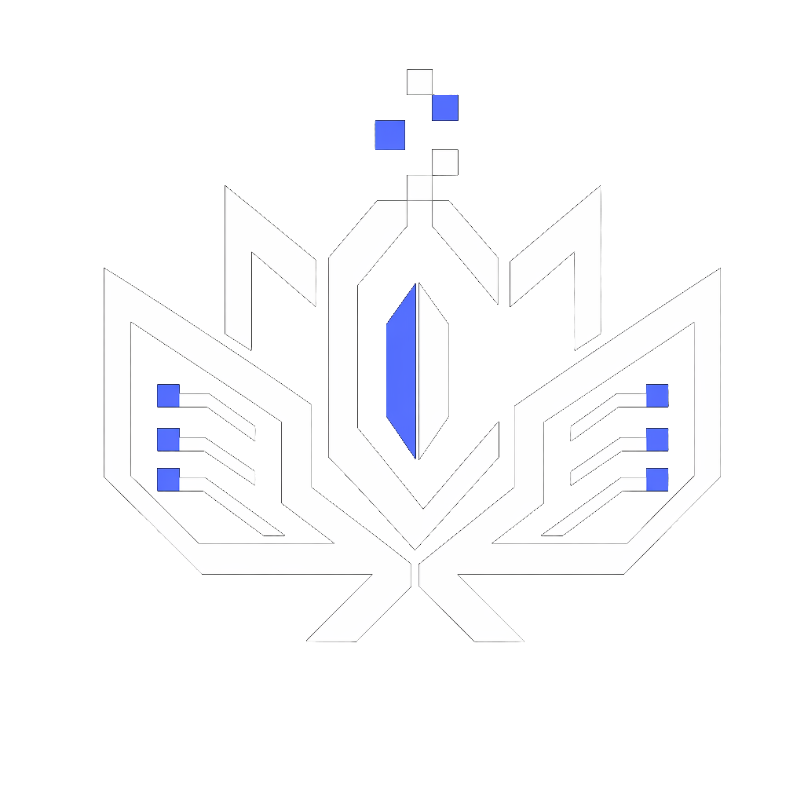

01
SHOT · 大特写 · 推镜
 ★ SELECTED0:04
★ SELECTED0:04
雨夜霓虹街头，侦探抬眼，雨水沿帽檐滑落，浅景深，电影级调色。
侦探
"这座城市，从不下完一场干净的雨。"
候选视频4 takes


你喜欢 Line B 的框架与交互，又担心它的 teal/amber 配色与蓝色 Logo 冲突。这其实是两个独立的问题——骨架（结构/布局/交互/动效）与皮肤（配色/字体/氛围）本就可以解耦。本实验室用同一套 Line B 骨架，在最高价值的分镜工作台上并排呈现 3 套配色皮肤，外加一条 Logo 适配实验，让你对着真实页面拍板。
每张卡都是 Line B 的近无框浮起卡 + halation + 颗粒/光晕氛围层。注意结构一致、氛围一致，只有色彩语言不同。重点看：①主操作按钮的颜色 ②选中态 halation 的颜色 ③整体冷暖基调与 Logo 蓝的关系。
★ SELECTED0:04
★ SELECTED0:04
★ SELECTED0:04
下方是用真实 token 渲染的完整分镜工作台（全局栏 + Pipeline 侧栏 + 头部 + 多态 ShotCard）。点按钮切换皮肤——同一段 DOM，只换 data-skin 上的 token 作用域，主色 / 强调色 / 底色 / 字体 / 氛围全部随之改变。这次 Full Atelier 与前两套是真正不同的渲染，不再是叠色模拟。
★ SELECTED0:04实现：上面整块就是 .specimen[data-skin]，与 Section 01 卡片共用同一套 seed→semantic token。切皮肤 = 改一个属性，组件 CSS 一行不动。这正是落地时「换肤」的真实成本。
核心问题：棱角莲花 Logo（白描边 + #646cff 水晶）与字标在不同皮肤底色下是否成立。左两套保留原蓝 Logo，最右套展示「配色焕新」的 teal 变体（此处用 CSS 滤镜快速验证方向，正式落地需重绘 SVG/PNG）。

你的诉求是「逐页混搭、不整套套用」。下表给出每个主要模块的建议：骨架/布局取自哪条线、交互动效取自哪条线、配色皮肤用哪套。这是一份可执行的混搭蓝图，而非二选一。
先别看表 —— 下面这张图把同一张 ShotCard 拆成三层，点按钮高亮，你就能一眼对上矩阵里「骨架 / 交互 / 配色皮肤」到底各指什么。三层互相独立：换皮肤不动骨架，换骨架不动交互。
★ SELECTED0:04提示：上方按钮切换高亮层；右侧三张卡解释每层的「具体是什么、由哪条线提供」。
读表方法：骨架与交互几乎全程 Line B（你最认可的框架与动效），真正逐页变化的只有最后一列「配色皮肤」。所以下表可以这样读 —— 主要看「配色皮肤」列，其余两列基本恒定。
| 模块 | 骨架 / 布局 | 交互 / 动效 | 配色皮肤 | 理由 |
|---|---|---|---|---|
| 分镜工作台STORYBOARD R2V | Line B 骨架 | Line B 交互 | Warm Bridge | 核心战场。近无框浮起卡 + halation 让选中 take 一眼可辨；蓝主操作保品牌，琥珀 halation 给「拍板感」。 |
| 工作区WORKSPACE | Line B 骨架 | Line B 交互 | Brand-True | 门面页，品牌一致性优先。画廊式留白 + 衬线标题提气质，但配色守住品牌蓝，第一印象不跑偏。 |
| Pipeline 步骤SCRIPT / ART / CAST / ASSEMBLY | Line B 骨架 | Line A 克制 | Warm Bridge | 表单密集步骤借 Line A 的克制 chrome（更少装饰、信息优先），但容器与间距用 Line B 的呼吸感。 |
| 资产库LIBRARY | Line B 骨架 | Line B 交互 | Warm Bridge | 媒体网格是主角。Line B 的浮起卡 + 悬停升起最适合展陈，暖底让缩略图更「发光」。 |
| 设置SETTINGS | Line A 骨架 | Line A 克制 | Brand-True | 功能性页面，效率优先。沿用现有风格的克制布局即可，无需电影氛围，降低认知负担。 |
| PlaygroundPLAYGROUND | Line B 骨架 | Line B 交互 | Full Atelier | 独立探索台，可大胆。这里是展示「创作魔法」的地方，完整 teal↔amber 最能营造 craft studio 氛围。 |
| 模态 / LightboxMODALS | Line B 交互 | Line B 交互 | 随父页 | 你特别欣赏的部分。Line B 的弹簧展开 + 背景模糊 + 内容居中对比，全局统一采用，配色继承所在页面。 |
说明：以上为建议初稿，每一格都可在确认主线皮肤后逐页微调。骨架与交互几乎全程 Line B；真正逐页变化的只有「配色皮肤」与少数克制度取舍。
综合品牌延续性、落地成本与差异化，给出一条主线方案和一条进阶方案，供你拍板。
如果你认可 Warm Bridge 作为主线，我建议下一步把它从「实验卡片」推进到「定稿页面」：在 tasty-sam 下新建 line-c-bridge/，输出工作台 / 工作区 / 资产库三张核心页的完整定稿 + 一份可直接喂给前端的 tokens.css（seed→semantic→component 三层）。其余页面按 Section 04 矩阵补齐。